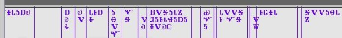

The picture of the keyboard control follows below. When you click on the down arrow to the rignt, you will see the available indigenous keyboard selections. ACORNS recognizes any installed True Type Font (ttf). If you want to use the standard Latin alphabet, just leave the drop down menu selected to English.
The affect of selecting a native keyboard is the text field will reflect the native font when you type into it. All places within ACORNS where a native word shows will be in the native font. For example, in the picture below, the annotations show in Cherokee. A picture of the text field on the annotation panel affected by your selection also shows below.
